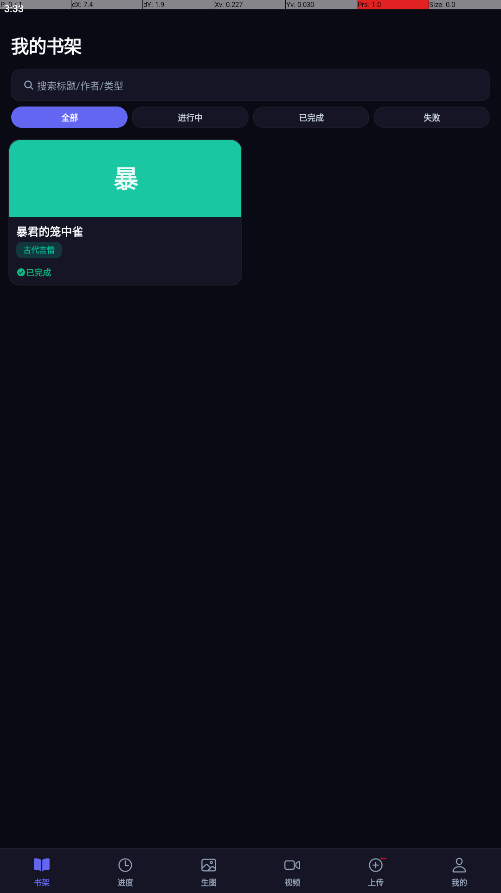
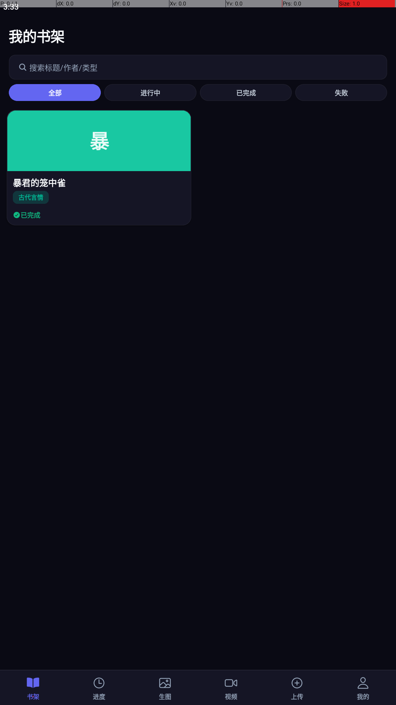
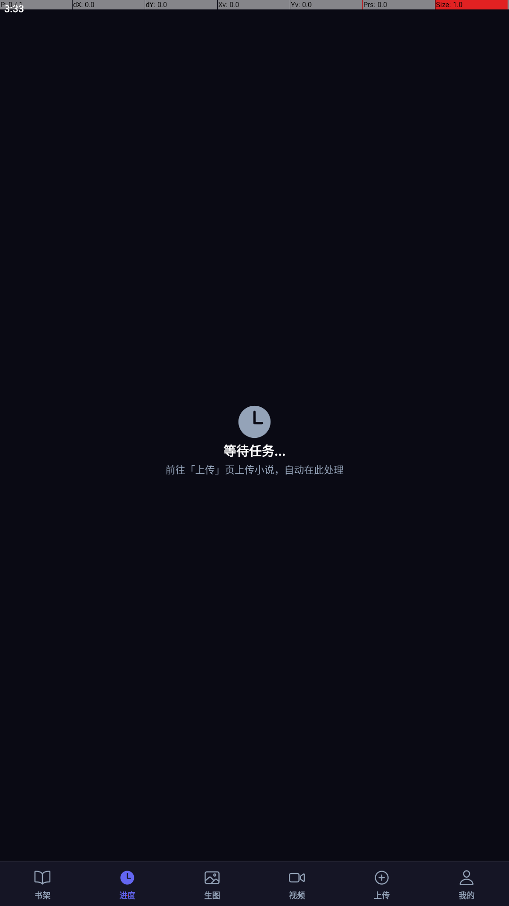
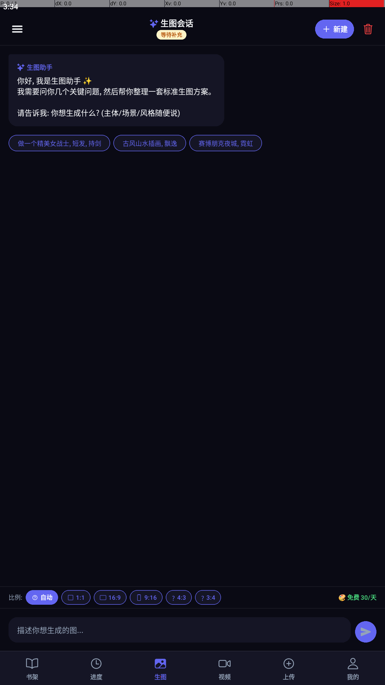
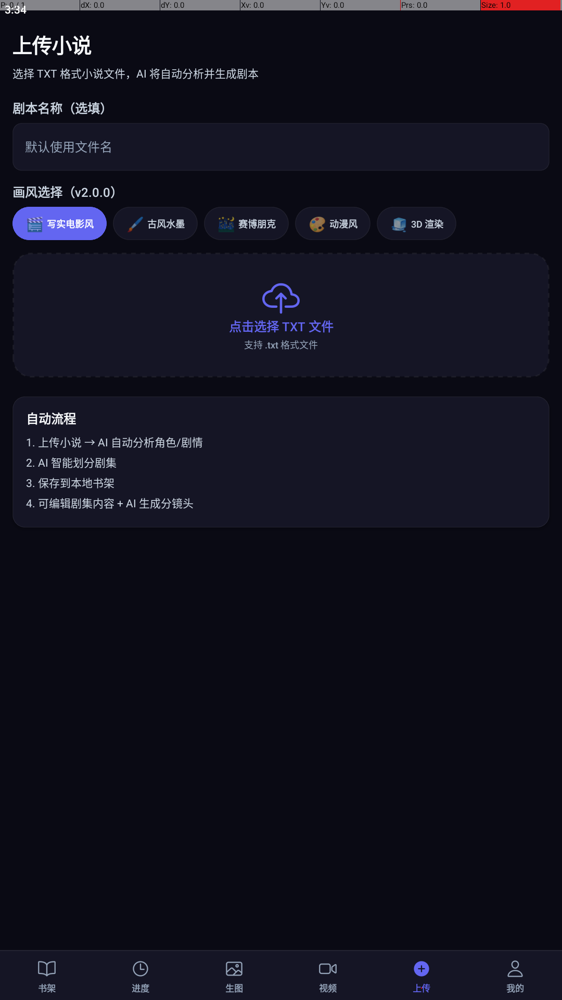
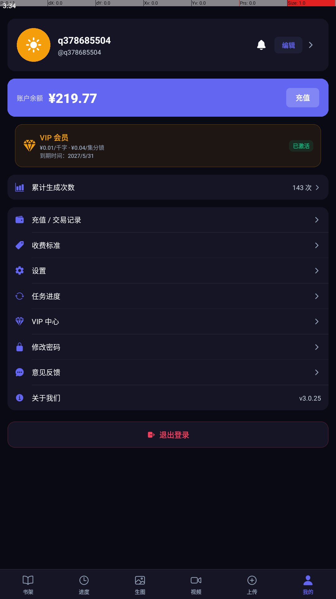

| # | Time | Action | Detail |
|---|---|---|---|
| 0 | 15:33:37 | stop_app | com.aiscriptmobile |
| 0 | 15:33:39 | launch | com.aiscriptmobile |
| 0 | 15:33:44 | sleep | 5s |
| 0 | 15:33:45 | dump_ui | 65 nodes |
| 0 | 15:33:46 | dump_ui | 65 nodes |
| 0 | 15:33:48 | dump_ui | 65 nodes |
| 1 | 15:33:48 | screenshot | F:\QiTa\banmu\APP\ai-video-script-app\scripts\bs-app-test\reports\sessions\my-py-explore-20260623-153337\screenshots\001-01-launch-already-logged-in.png |
| 1 | 15:33:49 | dump_ui | 65 nodes |
| 1 | 15:33:49 | tap | (90,1897) [tab=书架] |
| 1 | 15:33:52 | sleep | 1.2s |
| 2 | 15:33:52 | screenshot | F:\QiTa\banmu\APP\ai-video-script-app\scripts\bs-app-test\reports\sessions\my-py-explore-20260623-153337\screenshots\002-03-tab-书架.png |
| 2 | 15:33:53 | dump_ui | 65 nodes |
| 2 | 15:33:54 | tap | (270,1897) [tab=进度] |
| 2 | 15:33:56 | sleep | 1.2s |
| 3 | 15:33:56 | screenshot | F:\QiTa\banmu\APP\ai-video-script-app\scripts\bs-app-test\reports\sessions\my-py-explore-20260623-153337\screenshots\003-03-tab-进度.png |
| 3 | 15:33:58 | dump_ui | 44 nodes |
| 3 | 15:33:58 | tap | (450,1897) [tab=生图] |
| 3 | 15:34:01 | sleep | 1.2s |
| 4 | 15:34:01 | screenshot | F:\QiTa\banmu\APP\ai-video-script-app\scripts\bs-app-test\reports\sessions\my-py-explore-20260623-153337\screenshots\004-03-tab-生图.png |
| 4 | 15:34:02 | dump_ui | 91 nodes |
| 4 | 15:34:02 | tap | (630,1897) [tab=视频] |
| 4 | 15:34:05 | sleep | 1.2s |
| 5 | 15:34:05 | screenshot | F:\QiTa\banmu\APP\ai-video-script-app\scripts\bs-app-test\reports\sessions\my-py-explore-20260623-153337\screenshots\005-03-tab-视频.png |
| 5 | 15:34:07 | dump_ui | 131 nodes |
| 5 | 15:34:07 | tap | (810,1897) [tab=上传] |
| 5 | 15:34:10 | sleep | 1.2s |
| 6 | 15:34:10 | screenshot | F:\QiTa\banmu\APP\ai-video-script-app\scripts\bs-app-test\reports\sessions\my-py-explore-20260623-153337\screenshots\006-03-tab-上传.png |
| 6 | 15:34:11 | dump_ui | 75 nodes |
| 6 | 15:34:11 | tap | (990,1897) [tab=我的] |
| 6 | 15:34:14 | sleep | 1.2s |
| 7 | 15:34:14 | screenshot | F:\QiTa\banmu\APP\ai-video-script-app\scripts\bs-app-test\reports\sessions\my-py-explore-20260623-153337\screenshots\007-03-tab-我的.png |





